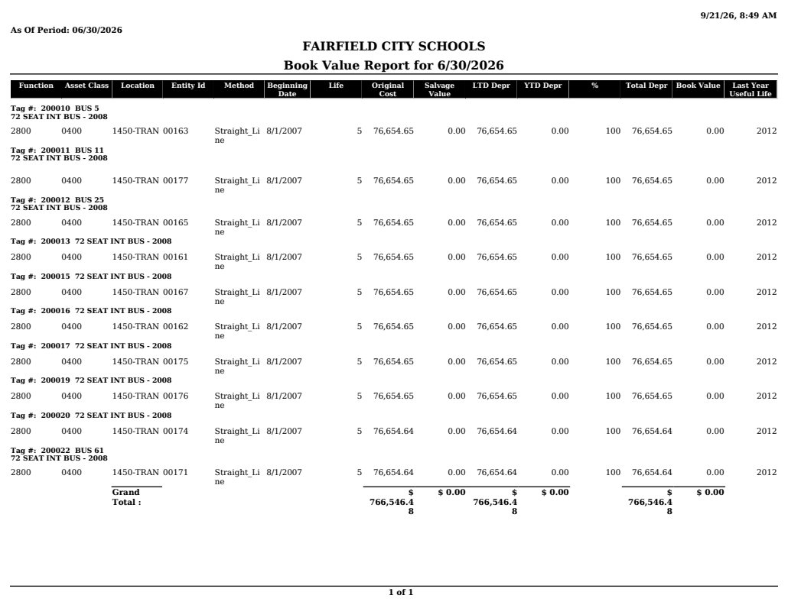

Source exhibit
BookValueReport (2).pdf
Source SHA-256: 7c961cee43a6d9db2884afd2691698a8cc3f93c2223bc25e71aa575af73d9798
Page 1

Extracted text · page 1
9/21/26, 8:49 AM As Of Period: 06/30/2026 FAIRFIELD CITY SCHOOLS Book Value Report for 6/30/2026 Function Asset Class Location Entity Id Method Beginning Date Life Original Cost Salvage Value LTD Depr YTD Depr % Total Depr Book Value Last Year Useful Life Tag #: 200010 BUS 5 72 SEAT INT BUS - 2008 2800 0400 1450-TRAN 00163 Straight_Li ne 8/1/2007 5 76,654.65 0.00 76,654.65 0.00 100 76,654.65 0.00 2012 Tag #: 200011 BUS 11 72 SEAT INT BUS - 2008 2800 0400 1450-TRAN 00177 Straight_Li ne 8/1/2007 5 76,654.65 0.00 76,654.65 0.00 100 76,654.65 0.00 2012 Tag #: 200012 BUS 25 72 SEAT INT BUS - 2008 2800 0400 1450-TRAN 00165 Straight_Li ne 8/1/2007 5 76,654.65 0.00 76,654.65 0.00 100 76,654.65 0.00 2012 Tag #: 200013 72 SEAT INT BUS - 2008 2800 0400 1450-TRAN 00161 Straight_Li ne 8/1/2007 5 76,654.65 0.00 76,654.65 0.00 100 76,654.65 0.00 2012 Tag #: 200015 72 SEAT INT BUS - 2008 2800 0400 1450-TRAN 00167 Straight_Li ne 8/1/2007 5 76,654.65 0.00 76,654.65 0.00 100 76,654.65 0.00 2012 Tag #: 200016 72 SEAT INT BUS - 2008 2800 0400 1450-TRAN 00162 Straight_Li ne 8/1/2007 5 76,654.65 0.00 76,654.65 0.00 100 76,654.65 0.00 2012 Tag #: 200017 72 SEAT INT BUS - 2008 2800 0400 1450-TRAN 00175 Straight_Li ne 8/1/2007 5 76,654.65 0.00 76,654.65 0.00 100 76,654.65 0.00 2012 Tag #: 200019 72 SEAT INT BUS - 2008 2800 0400 1450-TRAN 00176 Straight_Li ne 8/1/2007 5 76,654.65 0.00 76,654.65 0.00 100 76,654.65 0.00 2012 Tag #: 200020 72 SEAT INT BUS - 2008 2800 0400 1450-TRAN 00174 Straight_Li ne 8/1/2007 5 76,654.64 0.00 76,654.64 0.00 100 76,654.64 0.00 2012 Tag #: 200022 BUS 61 72 SEAT INT BUS - 2008 2800 0400 1450-TRAN 00171 Straight_Li ne 8/1/2007 5 76,654.64 0.00 76,654.64 0.00 100 76,654.64 0.00 2012 Grand Total : $ 766,546.4 8 $ 0.00 $ 766,546.4 8 $ 0.00 $ 766,546.4 8 $ 0.00 1 of 1